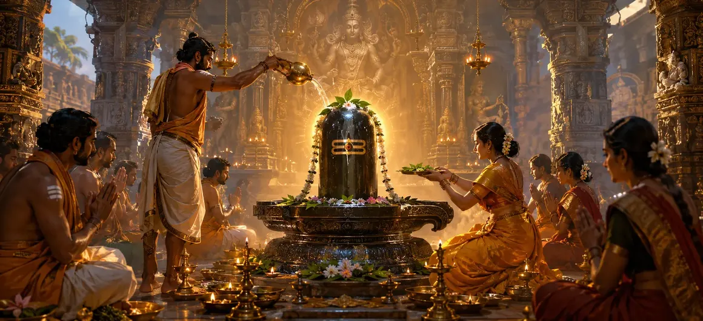

The Worship of Shiva
The sixtieth chapter of the Vayaviya Samhita delves deep into the supreme philosophy and immersive practice of worshiping Lord Shiva, elevating ritual action into transcendent realization.
Rishi Vayu explains how true worship bridges the finite human consciousness with the infinite, all-pervading reality of Maheshwara.
This chapter serves as a spiritual cornerstone for every dedicated Shaiva practitioner.
Chapter 60 Highlights
Supreme Reality
Understanding Shiva as pure consciousness.
Devotional Absorption
Melting the ego in divine love.
Meditative Union
Uniting the mind with the formless absolute.
Grace Flow
Experiencing unceasing divine grace.
Inner Liberation
Attaining freedom while living (Jivanmukti).
Path Forward
Exploring ancillary rites in Chapter 61.
Core Topics in This Chapter
- 01The Philosophical Basis of Worshiping Lord Shiva→
- 02Unifying Outer Ritual with Inner Realization→
- 03The Role of Supreme Love and Devotion (Bhakti)→
- 04Dissolution of Dualism Through Deep Meditation→
- 05Experiencing the Presence of Shiva in All Beings→
- 06Attaining Supreme Liberation and Bliss→
- 07Transition to Chapter 61 (Ancillary Rites)→
The Philosophical Basis of Worshiping Lord Shiva
Rishi Vayu explains that Lord Shiva is not merely an external deity, but the innermost Self (Atman) of all living beings.
Worshiping Shiva is essentially the soul's journey of returning to its pristine, non-dual source of pure consciousness and bliss.
Unifying Outer Ritual with Inner Realization
While previous chapters detailed specific ritual steps, Chapter 60 emphasizes that physical acts must be infused with spiritual understanding.
Without inner awakening, ritual remains incomplete; with it, every action becomes worship.
The Role of Supreme Love and Devotion (Bhakti)
The sage highlights that supreme devotion (Para-Bhakti) melts all barriers between the worshiper and the worshiped.
Love for Lord Shiva transforms the heart into a consecrated temple where divine grace flows uninterrupted.
Dissolution of Dualism Through Deep Meditation
Through steady meditation, the sense of separation between 'I' and 'Shiva' dissolves into the realization of 'Shivoham' (I am Shiva).
This non-dual realization is the summit of Shaiva philosophy.
Experiencing the Presence of Shiva in All Beings
A true devotee who worships Shiva begins to see the same divine light shining within every creature in the universe.
Compassion and universal love become the natural expression of this elevated worship.
Attaining Supreme Liberation and Bliss
The chapter concludes that persistent, devoted worship of Lord Shiva destroys all karmic fetters and grants ultimate moksha.
The devotee rests eternally in the supreme peace of Maheshwara.
Transition to Chapter 61 (The Worship of Shiva with Ancillary Rites)
Having established the profound philosophy of Shiva worship in Chapter 60, Rishi Vayu prepares to narrate Chapter 61, 'The Worship of Shiva with Ancillary Rites'.
This next chapter will detail the supplementary rituals and auxiliary rites that support complete worship.
Key Teachings of Chapter 60
Inner Self
Recognizing Shiva as the inner Atman.
Wisdom & Action
Infusing rituals with deep consciousness.
Para-Bhakti
Supreme love dissolving duality.
Shivoham
Realizing oneness with Lord Shiva.
Universal Vision
Seeing Shiva in all living creatures.
Ancillary Prelude
Preparing for Chapter 61 ancillary rites.
Spiritual Reflection
The worship of Shiva is not merely an external practice, but the ultimate awakening of consciousness where the worshiper, the worship, and Lord Shiva become one.
Living the Message of Chapter 60
Look beyond name and form in your spiritual practice and recognize the pure consciousness shining within your own heart.
Treat every being with reverence, seeing the presence of Lord Shiva everywhere.
Let your entire life become an unceasing act of loving devotion.
Key Spiritual Concepts
Realizing the complete identity between individual soul and Shiva.
Supreme, unconditioned love and devotion to the divine.
Meditative contemplation of "I am Shiva".
Perceiving Lord Shiva in all created beings.
Liberation attained while living through supreme realization.
Internal worship offered in the fire of pure consciousness.
Chapter Summary
Vayaviya Samhita Chapter 60 explores the supreme philosophy of worshiping Lord Shiva, uniting outer ritual action with inner realization, supreme love, non-dual meditation, and the vision of Shiva in all beings. This chapter paves the way for Chapter 61, 'The Worship of Shiva with Ancillary Rites'.
Frequently Asked Questions
1. What is the primary focus of Vayaviya Samhita Chapter 60?
Chapter 60 focuses on the profound philosophy and advanced practices of worshiping Lord Shiva, uniting external devotion with inner realization.
2. How does Chapter 60 expand upon previous chapters?
It deepens the connection between mechanical ritual acts and the supreme consciousness of Lord Shiva, emphasizing the role of pure love and meditation.
3. Who expounds the teachings in Chapter 60?
Rishi Vayu continues his profound discourse on Shaiva worship to the assembled sages.
4. What is the next chapter for navigation after Chapter 60?
The next chapter for navigation is titled 'The Worship of Shiva with Ancillary Rites'.
“When the individual soul recognizes its identity with Lord Shiva through love and meditation, all sorrow ends and supreme bliss is eternally realized.”
Continue Through Vayaviya Samhita
Chapter 60 concludes The Worship of Shiva. Continue to The Worship of Shiva with Ancillary Rites.